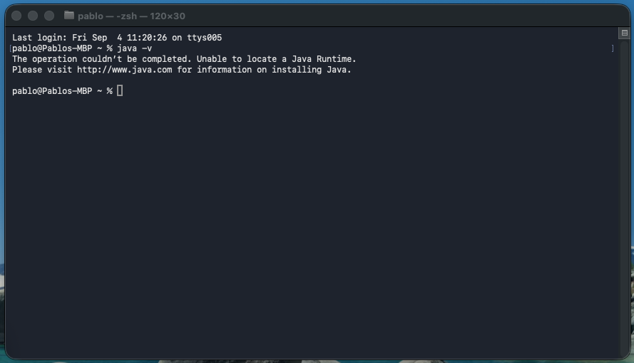

Lo que vas a instalar
Una sola cosa: Eclipse IDE for Java Developers, descargado de eclipseide.org. Eclipse es él mismo una aplicación Java y necesita una máquina virtual para arrancar, pero de eso se encarga su propio instalador: si no encuentra un Java válido en tu ordenador, se ofrece a descargarlo.
A eso se suma el material de la asignatura, que está en el Campus Virtual en dos archivos:
-
ICI-MsPacManEngine.zip: el simulador. Sirve para las prácticas de la primera mitad del curso, de la 0 a la 4, así que se descarga una sola vez. Y no se modifica nunca. -
ICI-Practica0.zip: el proyecto donde escribirás tus controladores. Habrá uno igual por cada práctica.
Descárgate los dos antes de seguir. Todo lo que viene después da por hecho que los tienes en el disco.
Si tienes curiosidad por saber con qué partes, abre un terminal
(cmd en Windows, Terminal en macOS o Linux)
y ejecuta java -version. Si responde con una versión 21 o mayor, ya tienes un Java
aprovechable. Si en cambio dice «command not found» o
«Unable to locate a Java Runtime», como en la captura, no hay que hacer nada especial:
el instalador de Eclipse lo resuelve en el paso 2.

Instalar Eclipse
Ve a eclipseide.org, descarga el instalador y, en la lista de paquetes, elige «Eclipse IDE for Java Developers». Es el más pequeño de los que nos sirven e incluye lo único que necesitamos además del editor de Java: el soporte de Maven (m2e), con el que el simulador resuelve sus dependencias.
«Eclipse IDE for Enterprise Java and Web Developers» también funciona, pero descarga bastante más de lo necesario. Cualquier versión de los últimos dos años vale; si te dan a elegir, coge la más reciente.
En la página de descarga hay que elegir arquitectura, y equivocarse aquí es el error más común. Si tu Mac es M1, M2, M3 o M4, necesitas aarch64, no x64. En Windows y Linux de sobremesa, casi siempre x64. Con la arquitectura equivocada, Eclipse o no se instala, o arranca con errores incomprensibles.
El workspace
Al final de la instalación te pedirá una carpeta de workspace. El workspace es simplemente el directorio donde Eclipse guarda tus proyectos y su configuración; te propondrá algo como ~/eclipse-workspace y así está bien.
Crea un workspace nuevo para la asignatura, en File > Switch Workspace > Other…. Mezclar estos proyectos con los de otras asignaturas complica la vida cuando algo se rompe.
El Java que usa Eclipse
Durante la instalación, Eclipse busca una máquina virtual de Java con la que arrancar. Si no encuentra ninguna válida, se ofrece a descargarla él mismo: acepta y quédate con Java 21 o superior. No hace falta que instales Java por tu cuenta ni que elijas distribución.
El instalador te deja señalar la instalación que ya tienes. Si es la 21 o mayor, úsala; si es anterior, deja que descargue una nueva. Varias versiones conviven sin problema en el mismo ordenador: Eclipse usará la que le indiques y el resto del sistema seguirá con la suya.
¿Me sirve el Java que ya tengo?
| Lo que tienes | ¿Sirve? | Comentario |
|---|---|---|
| Nada, ningún Java instalado | Sin problema | El caso normal, y el más cómodo: el instalador de Eclipse se encarga. |
| JDK 21 o 25 (LTS), cualquier proveedor | Sirve | Es sobre lo que está probado el material de la asignatura. Señálalo y sigue. |
| Sólo un JRE, sin compilador | Sirve para el IDE | Eclipse trae su propio compilador, así que compila igual. Para compilar desde el terminal sí necesitarías un JDK. |
| Java 8, 11 o 17 | No | Las versiones recientes de Eclipse ni arrancan con ellas. Deja que el instalador descargue una nueva. |
Comprobación
Con Eclipse ya instalado, ábrelo: si llega a la ventana del Package Explorer, el Java está resuelto. El paso 5 comprueba además cuál es el que usa para compilar.
Si además quieres trabajar desde el terminal, que no es necesario para el curso, un
java -version y un javac -version deben responder los dos, y con el
mismo número. Si java contesta pero javac no, lo que tienes es un JRE.
Importar los dos proyectos
Descomprime los dos zips del Campus Virtual en la misma carpeta, en algún sitio estable.
Cada uno trae una carpeta de proyecto Eclipse completa: MsPacManEngine por un lado
y Practica0 por otro. Importa primero el simulador, porque el proyecto de la
práctica lo referencia por su nombre.
Con Eclipse abierto:
- File > Import…
- General > Existing Projects into Workspace, y Next.
- En Select root directory, pulsa Browse… y elige la carpeta donde has descomprimido los dos zips. Eclipse encuentra los proyectos y los lista solo.
-
Marca los dos,
MsPacManEngineyPractica0. - Marca también «Copy projects into workspace» y pulsa Finish.
Con esa casilla marcada trabajas sobre tu copia, y siempre te queda el original intacto para volver a empezar si algo se lía. Sin ella, Eclipse edita directamente los archivos descomprimidos.
Al terminar verás los proyectos en el Package Explorer, probablemente con marcas rojas de error. Es lo esperado: aún falta descargar las dependencias. Eso es el paso siguiente.
Resolver las dependencias con Maven
MsPacManEngine es un proyecto Maven: su archivo pom.xml declara las
bibliotecas que necesita y Maven las descarga de Internet la primera vez. Son unas cuantas
(jCOLIBRI para el razonamiento basado en casos, GraphStream para grafos, slf4j para
logging) y las usarás en prácticas posteriores. Otras tres
(jFuzzyLogic.jar, jess.jar, jsr94.jar) vienen ya dentro
de la carpeta lib/ del proyecto.
Haz clic derecho sobre MsPacManEngine y elige:
- Maven > Update Project… (o Alt+F5)
- Marca «Force Update of Snapshots/Releases».
- OK, y espera. La primera vez puede tardar varios minutos.
Este paso descarga de repositorios públicos. Hazlo con una conexión estable y, si estás en una red con proxy o cortafuegos restrictivo, mejor desde casa o con los datos del móvil. Un «Missing artifact …» casi siempre significa que la descarga no llegó a completarse: repite el Update Project.
La versión de Java del proyecto
El pom.xml del motor está escrito para Java 8, así que verás avisos del tipo
«source value 8 is obsolete». Son avisos, no errores: el proyecto
compila y funciona igual, y puedes ignorarlos mientras trabajemos con este motor.
Solo si tu JDK se niega a compilar con ese nivel, cosa que puede pasar con las versiones más nuevas, haz clic derecho en el proyecto, Properties > Java Compiler, desmarca «Use compliance from execution environment» y pon 21 en Compiler compliance level.
Comprobar que Eclipse ve tu JDK
Aunque Eclipse arranque, conviene confirmar cuál es el Java que usa para compilar. Ve a Window > Preferences > Java > Installed JREs (en macOS, Eclipse > Settings…).
Debe aparecer un Java 21 o superior marcado como predeterminado (en negrita). Si Eclipse descargó el suyo en el paso 2, ya estará ahí. Si no aparece ninguno, pulsa Add…, elige Standard VM y apunta el JRE home a la carpeta de instalación del JDK:
| Sistema | Ruta habitual del JDK |
|---|---|
| Windows | C:\Program Files\Java\jdk-21… |
| macOS | /Library/Java/JavaVirtualMachines/jdk-21.jdk/Contents/Home |
| Linux | /usr/lib/jvm/java-21-openjdk-amd64 |
Si tienes varias versiones instaladas, marca la casilla de la 21 o superior para hacerla predeterminada. Después, un Project > Clean… sobre todos los proyectos deja el estado limpio.
Tu proyecto y el enlace con el motor
Tu código nunca vive dentro de MsPacManEngine: vive en un proyecto aparte que
referencia al motor. El Practica0 que te descargas ya viene con esa
referencia hecha, pero merece la pena saber dónde está, porque es la causa número uno de
errores de compilación misteriosos.
Clic derecho en Practica0,
Properties > Java Build Path > Projects. Ahí debe figurar
MsPacManEngine. Si no está, Add… y añádelo. Eso es lo que permite
que tus clases hagan import pacman.Executor;.
Si necesitas crear el proyecto desde cero
- File > New > Java Project, nombre
Practica0. - En JRE, deja «Use default JRE» (tu JDK 21).
- Desmarca «Create module-info.java file» si te lo ofrece: este proyecto no usa módulos.
- Una vez creado, añade
MsPacManEngineen Java Build Path > Projects.
Paquetes
Todo tu código va en un paquete con esta forma exacta, donde X es el número de la
práctica e YY el número de grupo que se te asigne en clase:
es.ucm.fdi.ici.c2627.practicaX.grupoYYLa Práctica 0 es individual, así que en ella el último tramo no es un número de grupo:
es.ucm.fdi.ici.c2627.practica0.grupoIndividualLa entrega se corrige de forma automática y el nombre del paquete forma parte del contrato. Míralo con calma en el enunciado de cada práctica.
Lanzar la primera partida
El punto de entrada es una clase con main que configura un
Executor y le pasa dos controladores: uno para Ms. Pac-Man y otro para los
fantasmas. El proyecto Practica0 ya trae uno hecho, ExecutorTest,
junto a los dos controladores aleatorios que usa:
public class ExecutorTest {
public static void main(String[] args) {
Executor executor = new Executor.Builder()
.setTickLimit(4000)
.setVisual(true)
.setScaleFactor(2.5)
.build();
PacmanController pacMan = new MsPacManRandom();
GhostController ghosts = new GhostsRandom();
System.out.println(
executor.runGame(pacMan, ghosts, 30) // el último parámetro es la velocidad
);
}
}Ábrela, clic derecho sobre el editor y Run As > Java Application (o Ctrl+F11; ⌘+F11 en macOS).

Si todo está bien, ocurren tres cosas:
- Se abre una ventana con el laberinto y las cinco entidades moviéndose.
- La partida termina por sí sola al agotar los 4000 ticks o al perder las vidas.
- La consola de Eclipse imprime un número: la puntuación final.
Con controladores aleatorios esa puntuación será baja y errática, de unos pocos cientos de puntos. Es lo correcto: nadie está jugando todavía.
El tercer parámetro de runGame es el retardo entre ticks en
milisegundos: súbelo a 60 para seguir la partida con la vista, bájalo a
0 para que vuele. Y setVisual(false) quita la ventana, que es lo que
querrás cuando midas resultados sobre muchas partidas.
Cuando algo no funciona
Estos son los tropiezos que se repiten cada curso, con lo que suele arreglarlos.
| Lo que ves | Qué pasa y cómo se arregla |
|---|---|
| «Unable to locate a Java Runtime», o Eclipse no arranca | La arquitectura de Eclipse no es la de tu máquina, o no llegó a configurar ningún Java. Repasa el paso 1 vigilando x64 frente a aarch64, y el paso 2. |
ClassNotFoundException: pacman.Executor, o import pacman.* en rojo |
Tu proyecto no referencia al motor. Paso 6: Java Build Path > Projects debe incluir MsPacManEngine. |
| «Missing artifact es.ucm.fdi.gaia:jCOLIBRI:jar:3.2» u otro artefacto | Descarga de Maven incompleta. Maven > Update Project con Force Update y conexión estable. |
| Marca roja en el proyecto, pero ningún error en los archivos | Estado de compilación desactualizado. Project > Clean… y, si persiste, Update Project de Maven. |
| «source value 8 is obsolete» y avisos parecidos | Nada que arreglar: son avisos del nivel de compilación del motor. Si te molestan, el final del paso 4 explica cómo subirlo a 21. |
| El programa acaba al instante, sin ventana | Falta .setVisual(true) en el Builder, o el main que ejecutaste no es el que crees. Mira la pestaña de la consola. |
| Ms. Pac-Man se queda quieta o va a tirones | Tu getMove devuelve null, o tarda más de los 40 ms del tick. Devuelve siempre un MOVE válido, y MOVE.NEUTRAL si no hay nada mejor, evitando cálculos largos. |
| La ventana es enorme o minúscula | setScaleFactor(…). Prueba entre 1.5 y 3.0 según tu pantalla. |
| Todo iba bien y de pronto nada compila | Cierra Eclipse, bórralo todo del workspace y reimporta desde el zip original. Cuesta cinco minutos y resuelve más de lo que parece. |
Escríbeme a pabgut02@ucm.es con tres cosas: tu sistema
operativo, la salida de java -version y el texto completo del error, copiado y
pegado. Con eso se resuelve en un correo; con «no me funciona Eclipse», en cinco.
Antes de dar el entorno por listo
- Eclipse abre hasta el Package Explorer sin quejarse del Java.
- En Installed JREs hay un Java 21 o superior en negrita.
MsPacManEngineyPractica0están en el Package Explorer sin marcas rojas.Practica0referencia aMsPacManEngineen el Java Build Path.ExecutorTestabre la ventana del juego e imprime una puntuación al terminar.- Sabes cambiar la velocidad de la partida y apagar la interfaz gráfica.
- Te has guardado los dos zips originales del Campus Virtual, por si hay que reimportar.
Con esas casillas marcadas ya puedes empezar la Práctica 0, que es donde se aprende a jugar de verdad.
A dónde ir ahora
- Práctica 0 Enunciado El primer ejemplo ya funcionando, dos controladores que escribes tú y la entrega individual del domingo 20 de septiembre.
-
La clase
GameReferencia Lo único que tu controlador puede preguntarle a la partida: posiciones, distancias, caminos y tiempos. Se consulta desde el ejercicio 2 en adelante.